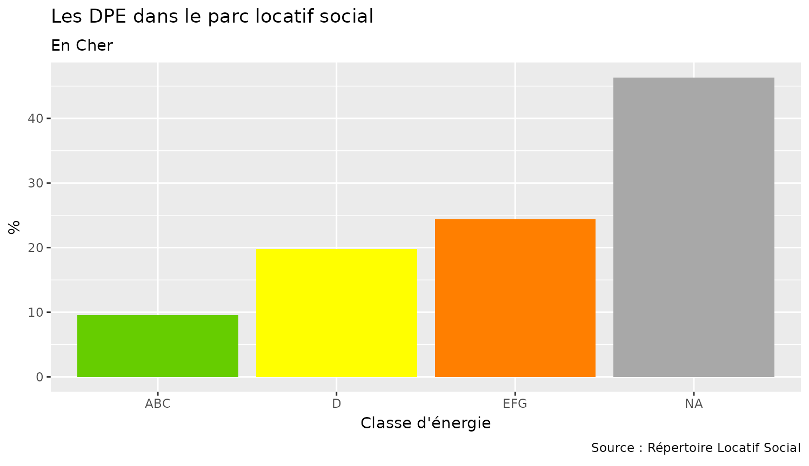

Exercices parcours R module 5 : datavisualisation
Source:vignettes/m05_exercices_module_datavisualisation_R.Rmd
m05_exercices_module_datavisualisation_R.RmdExercice 1
A partir des données de la table rpls_aggrege_large
(rpls_aggrege_large.RData), créer un nuage de point (un point par EPCI)
entre : :
- le % de parc social de moins de 5 ans (variable
Parc_de_moins_de_5_ans_pourcent) ; - et le pourcentage de logement avec un DPE gaz à effet de serre de
classe A, B ou C (variable
DPE_GES_classe_ABC_pourcent) ; - et une couleur différente pour distinguer les EPCI de la région Pays
de la Loire (la variable
epci_2017_52vaut 1 si l’EPCI appartient à la région PDL, 0 sinon).
Résultat attendu :

Exercice 2 - Modifier le thème
A partir des données de la table ODD_graphique1 (ODD.RData),
reprendre le nuage de point obtenu à partir des données ODD : taux de
mortalité maternelle (Maternal_mortality_ratio) en fonction
du produit intérieur brut (Gross_Domestic_Product_GDP)
(Chapitre 4.1) En modifier le thème : - insérer un titre de couleur, en
gras, centré par rapport au graphe, - indiquer la source (ODD) et
modifier sa taille, - changer les titres des axes et leurs tailles, -
modifier la couleur de fond du graphe, - modifier le type de quadrillage
(pointillés).
Résultat attendu :
Exercice 3 - Modifier les scales et labs
En réutilisant le graphe obtenu à l’exercice 1 (rpls_aggrege_large.RData), y rajouter : - une palette brewer pour la couleur ; - la légende en bas ; - des libellés (axes et légende) parlant et un titre.
Résultat attendu :
Exercice 4 - Les facettes
Réaliser une facette sur un diagramme barre avec :
- en variable discrète les régions,
- en variables continues les indicateurs suivants :
- % de logements de 3 et 4 pièces
- % DPE énergie A, B, C
- % DPE GES A, B, C
- % de parc de moins de 5 ans
- une façon d’identifier la région Pays de la Loire.
Résultat attendu :
Exercice 5 - Créer une carte avec ggplot2
Produire une carte du Loiret à l’EPCI représentant le taux de logements collectifs dans le parc locatif social (variable “Logements collectifs_pourcent”).
Résultat attendu :
Exercice 6 - Réaliser un graphe animé
A partir du fichier rpls_aggrege_large.RData, réaliser
un graphique en barre représentant la répartition des DPE par classe (en
%). Le graphique sera animé par département, uniquement pour ceux de la
région Centre-Val de Loire.
Résultat attendu :


Exercice 7 - Créer un graphique pour le web
Reprendre le nuage de point obtenu à partir des données ODD : taux de
mortalité maternelle (Maternal_mortality_ratio) en fonction
du produit intérieur brut (Gross_Domestic_Product_GDP)
(Chapitre 9)
Obtenir ce graphique pour le web avec des infos bulles regroupant le
nom du continent, de la zone, le PIB et le taux de mortalité
maternelle.
Paramétrer la surbrillance du continent au survol d’élément.
Résultat attendu :
Exercice 8 - Créer un tableau avec kable et kablextra
A partir de la table rpls_aggrege_large, produire un
tableau du nombre de logements collectifs et individuels (RPLS) par
départements en région Centre-Val de Loire : 1 ligne par département + 1
ligne avec le total de la région.
Résultat attendu :
| Zone | Nombre de logements collectifs | Nombre de logements individuels |
|---|---|---|
| Cher | 14434 | 7054 |
| Eure-et-Loir | 24462 | 7024 |
| Indre | 11533 | 6419 |
| Indre-et-Loire | 39030 | 9779 |
| Loir-et-Cher | 14632 | 6436 |
| Loiret | 37442 | 12671 |
| Centre-Val de Loire | 141533 | 49383 |